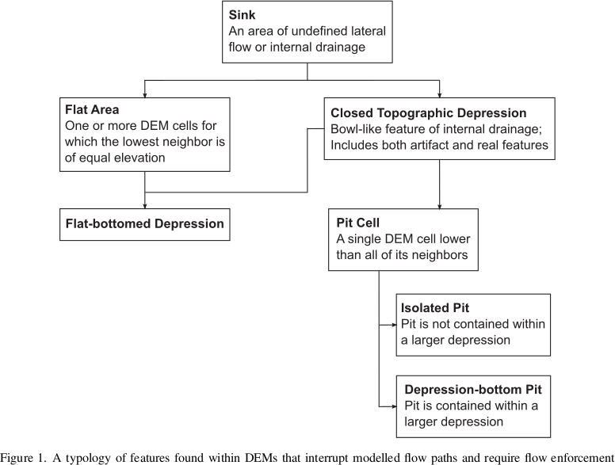

Depression-Filling¶
Depressions, otherwise known as pits, are areas of a landscape wherein flow ultimately terminates without reaching an ocean or the edge of a digital elevation model.
Depressions, Pits, and Sinks¶
Depressions have been called by a variety of names. To clarify this mess, Lindsay (2016) provides a typology. This typology is followed here.
Original DEM¶
For reference, the original DEM appears as follows:
import richdem as rd
import numpy as np
beau = rd.rdarray(np.load('imgs/beauford.npz')['beauford'], no_data=-9999)
beaufig = rd.rdShow(beau, ignore_colours=[0], axes=False, cmap='jet', figsize=(8,5.5))
(Source code, png, hires.png, pdf)
{kind=link}
{kind=link}
{kind=link}
Complete Filling¶
Depression-filling is often used to fill in all the depressions in a DEM to the level of their lowest outlet or spill-point.
The result looks as follows:
beau_filled = rd.FillDepressions(beau, in_place=False)
beaufig_filled = rd.rdShow(beau_filled, ignore_colours=[0], axes=False, cmap='jet', vmin=beaufig['vmin'], vmax=beaufig['vmax'], figsize=(8,5.5))
(Source code, png, hires.png, pdf)
{kind=link}
{kind=link}
{kind=link}
We can visualize the difference between the two like so:
beau_diff = beau_filled - beau
beaufig_diff = rd.rdShow(beau_diff, ignore_colours=[0], axes=False, cmap='jet', figsize=(8,5.5))
(Source code, png, hires.png, pdf)
{kind=link}
{kind=link}
{kind=link}
Complete Filling is available via the following commands:
| Language | Command |
|---|---|
| Python | richdem.FillDepressions |
| C++ | richdem::FillDepression |
| Pros | Cons |
|
|
Epsilon Filling¶
A downside of complete filling is that it replaces depressions with a perfectly flat region with no local gradients. One way to deal with this is to ensure that every cell in the region is raised some small amount, ε, above cells which are closer to a depression’s spill point.
This must be done carefully. In floating-point DEMs, the value ε is non-constant
and must be chosen using the std::nextafter function. If a depression is too
large, the imposed gradient may result in the interior of the depression being
raised above the surrounding landscape. Using double instead of float
reduces the potential for problems at a cost of twice the space used. If a
problem does arise, RichDEM provides a warning.
We can visualize the difference between the epsilon-filled DEM and the original DEM like so:
beau_epsilon = rd.FillDepressions(beau, epsilon=True, in_place=False)
beau_eps_diff = beau_epsilon - beau
beaufig_eps_diff = rd.rdShow(beau_eps_diff, ignore_colours=[0], axes=False, cmap='jet', figsize=(8,5.5))
(Source code, png, hires.png, pdf)
{kind=link}
{kind=link}
{kind=link}
We can visualize the difference between the epsilon-filled DEM and the completely-filled DEM as follows. Note that elevation increases with distance from the depression’s outlet: this is the effect of the epsilon.
beau_diffeps_diff = beau_epsilon - beau_filled
beaufig_diffeps_diff = rd.rdShow(beau_diffeps_diff, ignore_colours=[0], axes=False, cmap='jet', figsize=(8,5.5))
(Source code, png, hires.png, pdf)
{kind=link}
{kind=link}
{kind=link}
| Language | Command |
|---|---|
| Python | richdem.FillDepressions |
| C++ | richdem::FillDepressionsEpsilon() |
| Pros | Cons |
|
|